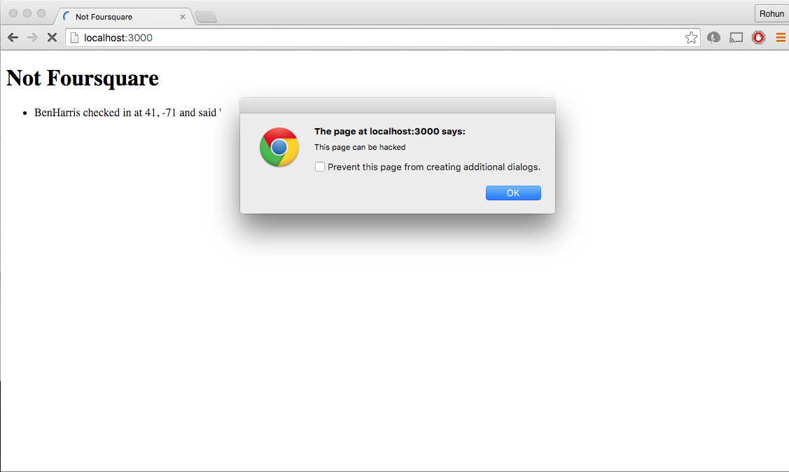
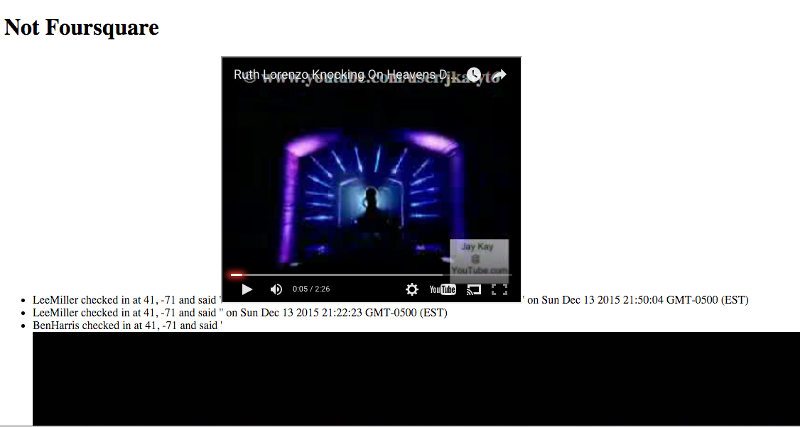
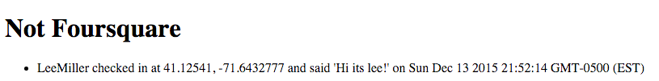

Introduction
My name is Rohun Dhar and I was asked to make an assessment of the security and privacy protection of a particular web server for an app called ‘MapChat’, which allows users to send their location, username, and a message to the server that will broadcast that user’s information to the rest of the client users of the app. However, there is a whitelist of users that are exclusively allowed to access this server through the app.
Methodology
I used an app called Postman in order to execute my security attacks. Postman is an app that allows me to make post and get requests through a third party in which I can control easily all of the information I send out as well as organize the response text. I also used the command line tool ‘curl’, which essentially allows me to do the same thing without a easy user interface. However, Postman has extra tools, such as allowed me to change the type of information I send raging from binary to form-data to x-www-form-urlencoded data.
I first performed a black-box test, which I set up the server on my local machine and, without looking at any code, making attacks that I predicted the website to be most vulnerable to. I then looked at the code and made more aggressive and targeted attacks, known as white-box testing.
Abstract of Findings
I found a number of issues with this server, the severity of which is generally high and dealing with Cross-Site Scripting as well as privacy and authentication issues.
Firstly, this server is at risk for cross-site scripting to occur. A valid user is allowed to send a message to the server that will be displayed to every other user’s screen, and someone could inject malicious and damaging content into that message that could cause harm to other machines that attempt to access that content.
Secondly, privacy is not secured in this app at all. Anyone has the ability to reached the homepage at route ‘/’ and see the list of messages that users have sent in to the server. It also shows the user’s exact location in latitude and longitude, so this information is out for everyone to see.
Thirdly, authentication is a huge issue here. There is supposed to be a whitelist of valid users, but the only requirement of authentication is that you send in the correct string name. This is not strong enough of an authentication process, which should at the very least require a password that is encoded and not displayed onto the webpage itself for everyone to see.
Issues Found
Cross-Site Scripting Risk (XSS)
- At the root directory “/” there is a risk for cross-site scripting. This html page displays any message that the user has sent to the server, and if the user has injected javascript using the tag
<script> or even inserted an image using the <img> then that code would execute once up on the browser.
- The severity of this issue is high. Damage from XSS in this case can range anywhere from creating an alert to redirecting the user to a malicious and intrusive web page.


- In order from top left, top right, bottom left, and bottom right are prime examples of XXS that have resulted in an intrusive alert, page redirect to reddit.com, embedded video, and image respectively.
- The resolution to this issue has multiple levels of involvement. Minimally, the user can do a simple screening of javascript notation to display < and > tags as harmless strings as opposed to executable code. This can be done by translating < as '<' and > as '>'. The server can also do a check to limit the message to a certain number of characters(e.g. 140 characters, the length of a tweet); this will prevent potentially malicious code from being intricate enough to do any intense damage.
No safeguard for privacy
- This issue is located within the server file itself
- Severity of issue: medium. At the top of the file is a hard-coded white list of all valid usernames. This is sensitive information that should not be so outwardly shown in the main file of this server.
- Also, on the main root directory page '/' there is a list of all user’s information. This includes their specific latitude and longitude, leaving their exact global location wide open for anyone with a modern web browser to see.

- Resolutions to this issue include, but not are not limited to, creating a separate encoded folder for whitelisted usernames, not displaying the full username onto the website along with that user’s location. The user’s name should not be broadcast on the website, perhaps only a shortened version: JeffSoulen would become Jsoulen. Also, instead of giving the exact global address, the server can find the correlating country and display that instead. “JSoulen from Massachusetts says” versus “Jeff Soulen from 41.12381203091, -71.2138021983 says”
Authentication issue
- This is an issue that exists throughout the server
- Severity of issue: high. The concept of this app is to have only a select group of people be able to access it. However, the only authenticating piece of information for any user is a username in the form of a string.
- This is unacceptably easy to bypass, for it allows any computer who has knowledge of any one of the usernames to get into the app. There is no secondary check(such as a password correlating to each username) that will help to secure this issue.
- All one needs to do is access the ‘/’ directory, and all of the previous logins will appear on the screen. Now when you log in, just tamper with the data to change the username to a username that you know is valid.
- Resolving this issue starts with creating a much more secure authentication process for valid users. There are many existing API’s , such as facebook, which have a secure open source authentication processes.
Conclusion